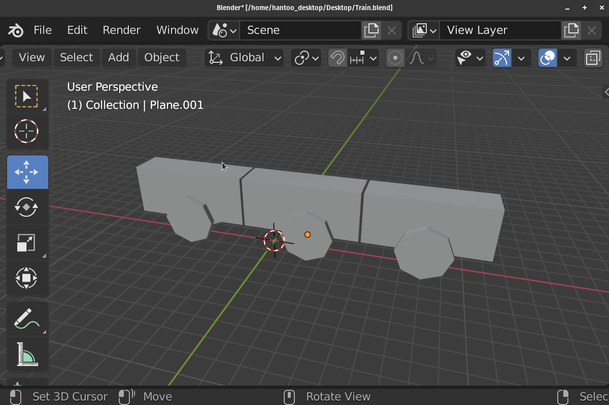
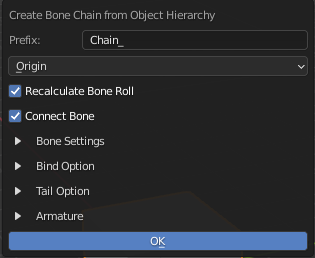
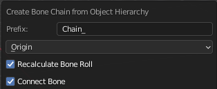
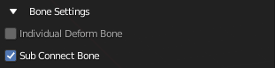
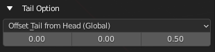
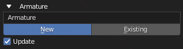

Bone Chain from Object Hierarchy
Object |
DEMO


This Operator Generates a Bone chain from Selected Objects, Using Object’s Hierarchy
The Operator Creates the Bone Using the Object’s Name
General Settings
Prefix: Prefix Added to the Created Bone, leave it blank if you do not want any prefix
- Position Mode
Position to Create the Bone (Uses Origin for not relevant objects)
Origin: Use Object’s Origin
Geometry: Use Midpoint of Object’s Geometry
Bounding Box: Use Bounding Box Midpoint of Object’s Geometry
Recalculate Bone Roll: Recalculate Created Bone to Local Z
Connect Bone: Tries to Connect Bone If Relevant
Bone Settings
Individual Deform Bone:
Create Individual Floating Deform Bone that parented to the chain instead of directly weighted to the chain bone
Sub Connect Bone:
Create Sub Connect Bone if there is more than one child
Tail Option
For Individual Deform Bone and the Most Outer Child
Tail Mode
Set Up Bone’s Tail Position
- Offset Tail From Head (Global)
Offset the tail from the head by the offset Vector in the Global Space
- Offset Tail From Head (Local)
Offset the tail from the head by the offset Vector in the Local Space
Tail Offset Amount
The Vector Used to offset the tail
Armature Option
Armature Name / Armature Picker
Name for New Armature or Pick a Existing Armature to Add Bone to
Armature Choice
Choose to create New Armature or Use Existing Armature
- New: Create bone to a New Armature that uses the Name Above
- 
- Exist: Create bone to existing Armature above

Update
Set the Operator to Existing and Use the Created Armature After Creating the Armature